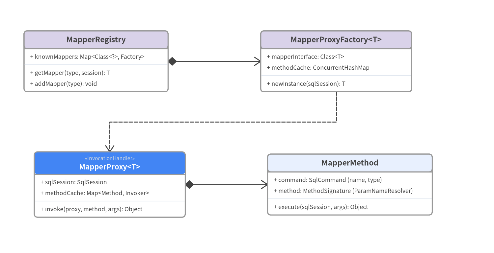
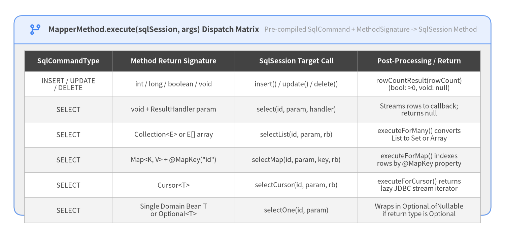

3. JDK Dynamic Proxy & Mapper Dispatch
One of MyBatis 3's signature ergonomic features is that application developers write only a Java interface (e.g., UserMapper) without any concrete implementation class. The org.apache.ibatis.binding package (6 source files) bridges interface method invocations to SqlSession commands using java.lang.reflect.Proxy and a cached MapperMethodInvoker dispatch table.

Source Code
from drawlib.canvas import save, setup
from drawlib.diagrams.class_diagram import ClassDiagram, ClassNode
from drawlib.fonts import FontMonoSpace, FontRoboto
from drawlib.styles import Colors, Styles
setup(width=144, height=74, dpi=150)
cd = ClassDiagram(
width=144.0,
height=74.0,
node_style=Styles.Neutral.patch(
shape_fill_color=Colors.White,
shape_line_color=Colors.Gray6,
text_color=Colors.Dark,
text_font=FontMonoSpace.ROBOTO_MONO_REGULAR,
text_size=9.2,
),
header_style=Styles.PrimaryNeutral.patch(
shape_line_color=Colors.Gray6,
text_color=Colors.Dark,
text_font=FontRoboto.ROBOTO_BOLD,
text_size=9.8,
),
edge_style=Styles.Dark.patch(line_width=1.4),
edge_text_style=Styles.DarkBold.patch(text_font=FontRoboto.ROBOTO_BOLD, text_size=9.2),
)
hero_hdr = Styles.PrimaryFlat.patch(text_color=Colors.White, text_font=FontRoboto.ROBOTO_BOLD, text_size=9.8)
sec_hdr = Styles.SecondaryNeutral.patch(shape_line_color=Colors.Gray6, text_color=Colors.Dark, text_font=FontRoboto.ROBOTO_BOLD, text_size=9.8)
n_reg = cd.add(
ClassNode("MapperRegistry", width=42.0, header_style=sec_hdr)
.add_attribute("knownMappers", "Map<Class<?>, Factory>")
.add_method("getMapper", "type, session", "T")
.add_method("addMapper", "type", "void"),
xy=(28.0, 56.0),
)
n_fac = cd.add(
ClassNode("MapperProxyFactory<T>", width=44.0, header_style=sec_hdr)
.add_attribute("mapperInterface", "Class<T>")
.add_attribute("methodCache", "ConcurrentHashMap")
.add_method("newInstance", "sqlSession", "T"),
xy=(98.0, 56.0),
)
n_proxy = cd.add(
ClassNode("MapperProxy<T>", stereotype="InvocationHandler", width=44.0, header_style=hero_hdr)
.add_attribute("sqlSession", "SqlSession")
.add_attribute("methodCache", "Map<Method, Invoker>")
.add_method("invoke", "proxy, method, args", "Object"),
xy=(32.0, 20.0),
)
n_method = cd.add(
ClassNode("MapperMethod", width=48.0)
.add_attribute("command", "SqlCommand (name, type)")
.add_attribute("method", "MethodSignature (ParamNameResolver)")
.add_method("execute", "sqlSession, args", "Object"),
xy=(102.0, 20.0),
)
cd.connect(n_reg, n_fac, "composition", directed=True, start_side="right", end_side="left")
cd.connect(n_fac, n_proxy, "dependency", start_side="bottom", end_side="top")
cd.connect(n_proxy, n_method, "composition", directed=True, start_side="right", end_side="left")
cd.draw(xy=(0.0, 0.0))
save()
Inside MapperProxy.invoke(): 3-Way Method Dispatch
When a caller invokes a method on UserMapper, MapperProxy.invoke(Object proxy, Method method, Object[] args) (src/main/java/org/apache/ibatis/binding/MapperProxy.java:78-115) resolves the call in three branches:
ObjectBase Methods (toString,hashCode,equals):- Checked via
Object.class.equals(method.getDeclaringClass())and invoked directly onthiswithout touchingSqlSession.
- Checked via
- Java 8+
defaultInterface Methods (DefaultMethodInvoker):- Checked via
method.isDefault(). Wrapped inside aDefaultMethodInvokerthat usesMethodHandles.Lookup(privateLookupInon Java 9+) to invoke the interface default method directly on the proxy instance.
- Checked via
- Mapped SQL Interface Methods (
PlainMethodInvoker->MapperMethod):- Computed once per
MethodviaMapUtil.computeIfAbsent(methodCache, method, ...)and cached insideMapperProxyFactory.methodCache(ConcurrentHashMap<Method, MapperMethodInvoker>). - Delegates to
MapperMethod.execute(sqlSession, args).
- Computed once per
How MapperMethod.execute() Routes by SqlCommandType & Return Type
MapperMethod (src/main/java/org/apache/ibatis/binding/MapperMethod.java:60-128) pairs two pre-computed descriptors:
SqlCommand: Resolves the statement ID (InterfaceName.methodName) andSqlCommandType(INSERT,UPDATE,DELETE,SELECT,FLUSH).MethodSignature: Inspects generic return types viaTypeParameterResolver.resolveReturnType(), locates special parameters (RowBounds,ResultHandler), and creates aParamNameResolver(@Paramannotations +-parametersreflection).

Source Code
from drawlib.canvas import save, setup
from drawlib.icons import phosphor
from drawlib.smartarts import Panel, Table
from drawlib.styles import Colors, Styles
setup(width=144, height=66, dpi=150)
panel = Panel(
"MapperMethod.execute(sqlSession, args) Dispatch Matrix",
"Pre-compiled SqlCommand + MethodSignature -> SqlSession Method",
style=Styles.Neutral,
header_style=Styles.PrimaryNeutral.patch(shape_line_width=1.2),
text_style=Styles.DarkBold.patch(text_size=10.8),
description_style=Styles.Muted.patch(text_size=9.5),
icon=phosphor.git_branch,
icon_style=Styles.PrimaryBold,
header_variant="filled",
header_height=8.0,
)
panel.draw((4.0, 4.5), width=136.0, height=57.0, align="bottom_left")
tbl = Table(
cell_style=Styles.White,
text_style=Styles.Dark.patch(text_size=9.5),
header_cell_style=Styles.PrimaryFlat,
header_text_style=Styles.WhiteBold.patch(text_size=9.8),
border_style=Styles.MutedThin,
)
tbl.set_style_cell_evenodd(
even_color=Colors.Gray1,
even_text_style=Styles.Dark.patch(text_size=9.5),
odd_color=Colors.White,
odd_text_style=Styles.Dark.patch(text_size=9.5),
)
tbl.set_style_cell_header(
background_color=Colors.Dark,
text_style=Styles.WhiteBold.patch(text_size=9.8),
)
rows = [
["SqlCommandType", "Method Return Signature", "SqlSession Target Call", "Post-Processing / Return"],
["INSERT / UPDATE\n/ DELETE", "int / long / boolean / void", "insert() / update() / delete()", "rowCountResult(rowCount)\n(bool: >0, void: null)"],
["SELECT", "void + ResultHandler param", "select(id, param, handler)", "Streams rows to callback;\nreturns null"],
["SELECT", "Collection<E> or E[] array", "selectList(id, param, rb)", "executeForMany() converts\nList to Set or Array"],
["SELECT", "Map<K, V> + @MapKey(\"id\")", "selectMap(id, param, key, rb)", "executeForMap() indexes\nrows by @MapKey property"],
["SELECT", "Cursor<T>", "selectCursor(id, param, rb)", "executeForCursor() returns\nlazy JDBC stream iterator"],
["SELECT", "Single Domain Bean T\nor Optional<T>", "selectOne(id, param)", "Wraps in Optional.ofNullable\nif return type is Optional"],
]
tbl.draw_flexible(
xy=(7.0, 51.5),
column_widths=[25.0, 35.0, 35.0, 35.0],
row_heights=[6.0] + [7.2] * 6,
data=rows,
align="top_left",
)
save()
Multi-Parameter Packaging in ParamNameResolver.getNamedParams(Object[] args)
When a mapper method takes arguments (src/main/java/org/apache/ibatis/reflection/ParamNameResolver.java:108-145):
- 0 parameters: Returns
null. - 1 parameter (without
@Param): Returnsargs[0]directly (unless it is aCollection/Array, whichDefaultSqlSession.wrapCollection()wraps into aParamMapwith keys"collection","list", or"array"). - Multiple parameters or any
@Param: Returns aMapperMethod.ParamMap<Object>containing both the explicit name (@Param("email")or compiled parameter name) and generic fallback keys"param1","param2", ...,"paramN". Accessing an unknown key inParamMapthrows a descriptiveBindingException: Parameter 'foo' not found. Available parameters are [email, status, param1, param2].